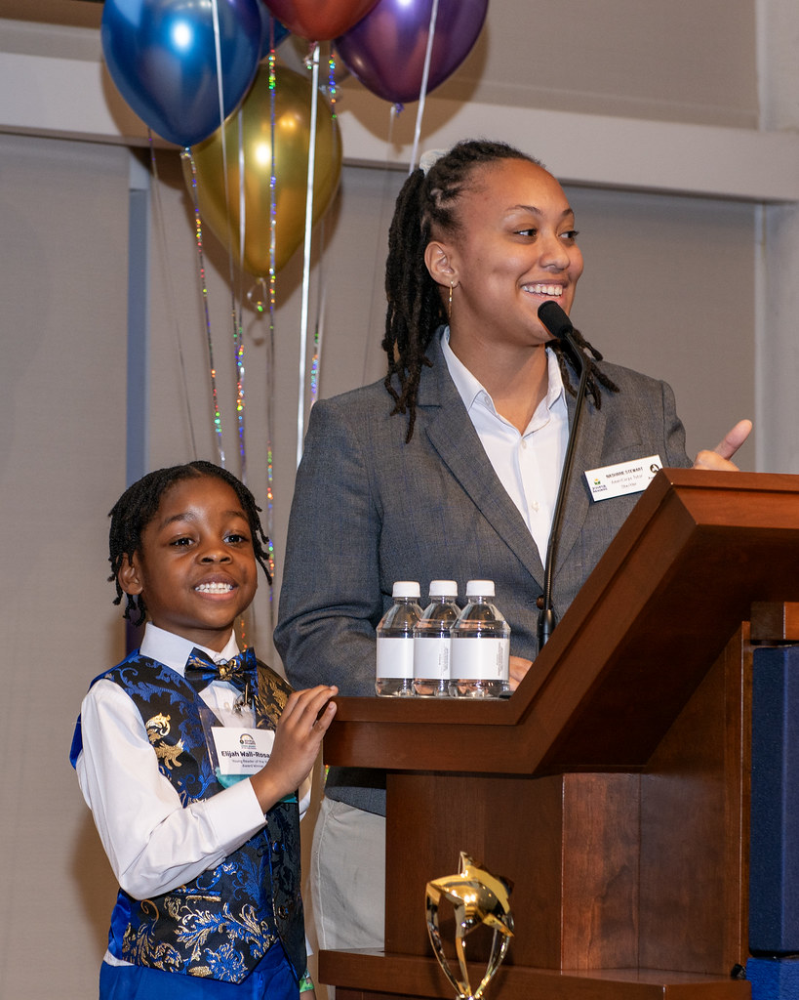
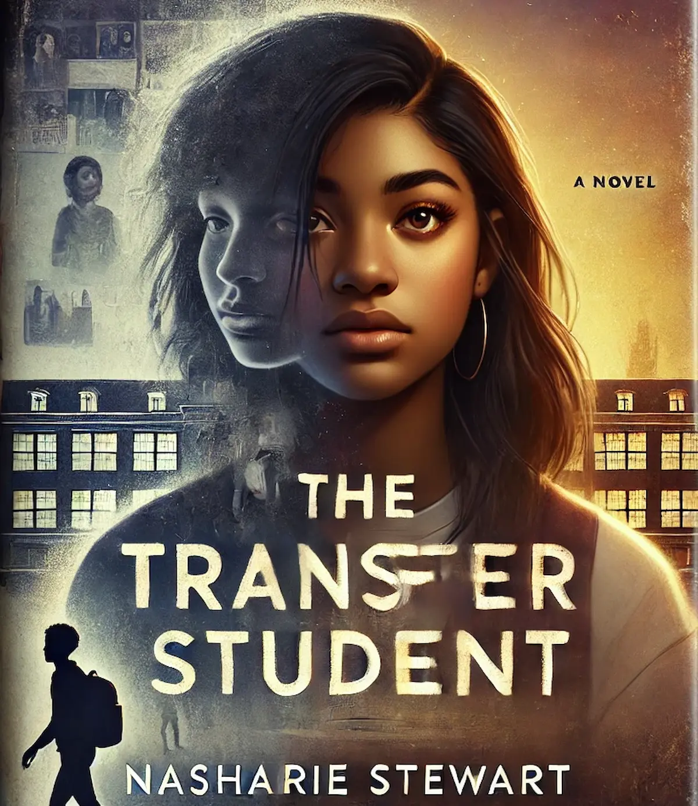

Featured Speech

A reflection on student growth, literacy, and what it means for a child to be seen, celebrated, and believed in.
About Nasharie
I am a writer, advocate, and aspiring law student passionate about education equity and storytelling that sparks change. Growing up in an underfunded school district shaped my drive to reimagine broken systems. Now, through my work, my studies, and my stories, I am committed to amplifying overlooked voices and building a more just world.
Work in Progress: The Transfer Student

Concept Cover. Not intended for official use.
Frustrated by the failing public school system around her, Amara longs for change but feels powerless to create it. At home, she struggles with grief over her father’s death and her mother's abandonment. To make matters worse, for weeks, she has been haunted by nightmares she doesn't understand. Then one morning, she wakes up in the body of a different student in a different country, with a new name, identity, and school awaiting her. Each education system challenges what she thought she knew about opportunity, privilege, and the future—a future she’s beginning to glimpse in terrifying flashes. What Amara does know now is this: the fight for education is bigger than her, and she may be the only one who can change it. But with every answer comes a harder question: What will it cost to make it back home?